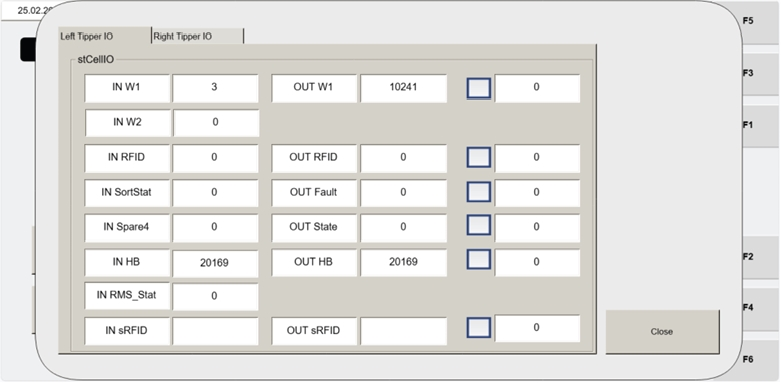

| Procedure ID | proc_open_cellio_status_from_visu_mancontrol_v1 |
|---|---|
| Title | Open CELLIO STATUS Sub-Screen From VISU_MANCONTROL to View Cell Control I/O Values |
| Procedure Type | diagnostic |
| Primary Role | L2_support |
| Support Safe | Yes |
| Capability Tags | tipper_station_fault |
| Access Surface | tipper_hmi |
| Audience Roles | L2_support |
| Failure Pattern Tags | None |
| Validation Status | needs_sme_review |
| Merge Status | source_finalized |
From the Operator Station HMI maintenance manual control screen VISU_MANCONTROL, use the CELLIO STATUS button to open the CELLIO STATUS sub-screen and view cell control input/output values per tipper for troubleshooting/verification.
Use when you need to verify cell control input/output values per tipper from the Operator Station HMI by opening the CELLIO STATUS sub-screen via VISU_MANCONTROL.

Responsible role: L2_support
Instruction:
On the Operator Station HMI (VISU / WebVisu), open the maintenance manual control screen named VISU_MANCONTROL.
Expected result:
The VISU_MANCONTROL screen is displayed and includes the CELLIO STATUS button (Item 9).
Stop or Escalate If:
Responsible role: L2_support
Instruction:
On VISU_MANCONTROL, press the CELLIO STATUS button (Item 9).
Expected result:
The CELLIO STATUS sub-screen opens.
Stop or Escalate If:
Responsible role: L2_support
Instruction:
On the CELLIO STATUS screen, verify that cell control input and output values are displayed for each tipper.
Expected result:
Cell control input and output values are displayed for each tipper on the CELLIO STATUS screen.
Stop or Escalate If: